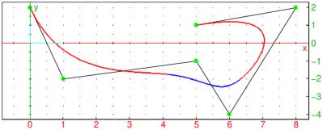
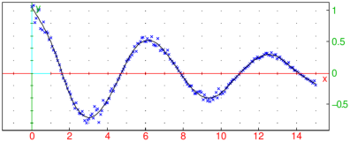
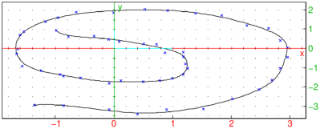

17.2.3 B-splines
Finding B-splines from control points.
The command bspline finds a B-spline
with a given list of control points and, optionally, a list of breakpoints.
-
bspline takes one mandatory argument and up to three optional argument(s):
-
cpts, a list of m control points in ℝd which may be given
either as vectors of (Cartesian) coordinates, 2D or 3D points (graphic objects), or
(complex) affixes of 2D points.
- Optionally, var, a variable specification which can be one of:
-
x, an identifier (by default x).
- x=a..b, where a and b are real numbers
such that a<b (by default, a=0 and b=1).
- x=[x0,x1,…,xn], where n=m−p+1 and xi are
real numbers for i=0,1,…,n given in strictly ascending order (by default,
xk=a+k/n(b−a) for k=0,1,…,n).
- Optionally, p, a positive integer corresponding to the spline degree
(by default, p=3, which produces a cubic B-spline).
- Optionally, piecewise, the symbol.
- bspline(cpts ⟨,var,p ⟩ ⟨,piecewise ⟩)
returns a matrix with n−1 rows and d columns in which the kth row represents a parametric
definition of the B-spline with parameter x such that x∈[xk,xk+1⟩, or,
if piecewise is given, a parametric representation of the entire spline in
which each component is piecewise-defined.
- The points x0,x1,…,xn are called breakpoints. B-spline is a piecewise
parametric function with parts joining at these points. If no breakpoints are given,
a uniform subdivision of the specified segment [a,b] (by default [0,1]) is used. Note
that the relation 2≤ n=m−p+1 must hold, which implies m≥ p+1.
- B-splines are useful for curve-fitting and numerical differentiation of data.
Example
To define a sequence of control points, enter:
| c:=2i,1-2i,5-i,6-4i,8+2i,5+i:; |
Now compute the B-spline defined by the above points and uniform knots,
with parameter t∈[0,1]:
|
| |
| ⎡
⎢
⎢
⎢
⎢
⎢
⎢
⎢
⎢
⎣ | | |
| |
| −117 t3+243 t2−162 t+41 | −162 t3+378 t2−279 t+64 |
| ⎤
⎥
⎥
⎥
⎥
⎥
⎥
⎥
⎥
⎦ |
| | | | | | | | | | |
|
To plot the result with alternating red-blue color for spline pieces and
green control points, enter:
| polygon(c,open);
plotparam(bs[0],t=0..1/3,display=red+line_width_2);
plotparam(bs[1],t=1/3..2/3,display=blue+line_width_2);
plotparam(bs[2],t=2/3..1,display=red+line_width_2);
point(c,display=point_point+point_width_3+green); |

Sometimes it is useful to return the result in a piecewise form. Enter:
| bs:=bspline([c],t,piecewise) |
|
| |
| ⎡
⎢
⎢
⎢
⎢
⎢
⎢
⎢
⎢
⎢
⎣ | ⎧
⎪
⎪
⎪
⎪
⎨
⎪
⎪
⎪
⎪
⎩ | | |
| |
| −117 t3+243 t2−162 t+41, | 1≥ t |
|
| , | ⎧
⎪
⎪
⎪
⎪
⎨
⎪
⎪
⎪
⎪
⎩ | | |
| |
| −162 t3+378 t2−279 t+64, | 1≥ t |
|
| ⎤
⎥
⎥
⎥
⎥
⎥
⎥
⎥
⎥
⎥
⎦ |
| | | | | | | | | | |
|
The result is a list of components of the spline function.
Now, for example, the command line
draws the entire spline.
Fitting B-splines to data.
The fitspline command fits
B-splines to (multidimensional) time-stamped data in the least-squares sense.
-
fitspline takes two mandatory arguments and a sequence of optional arguments:
-
data, a list of time-stamped locations in ℝd given either as
[tk,xk1,xk2,…,xkd] or as [tk,[xk1,xk2,…,xkd]] for
k=1,2,…,m, where m≥ 2 and d≥ 1.
- var, which is either a variable or a vector of real numbers.
- Optionally, opts, a sequence of options each of which may be one of:
-
brkpts, which is either a positive integer n specifying the number of
spline pieces (by default, n=⌊√m+1/2⌋), or
breakpoint=[b0,b2,…,bn] which specifies the breakpoints
b0,…,bn∈ℝ explicitly (and not necessarily in an ascending order).
Note that minibi≤ t1<tm≤ maxjbj must hold. If brkpts=n, then n+1
uniformly spaces breakpoints are automatically generated in the segment [t1,tm].
- degree=p, where p is a positive integer (spline degree, by default p=3).
- piecewise, the symbol.
- fitspline(data,var ⟨,opts ⟩) returns
-
the list of spline points at elements of var if the latter is a vector,
- the spline as returned by bspline for the variable var and optionally
piecewise, if var is an identifier.
The resulting spline (of degree p) is computed from a sequence of n+1 breakpoints (either
automatically generated or explicitly given) and n+p control points obtained by minimizing
squared distances between spline points at values tk and data points
(xk1,xk2,…,xkd) for k=1,2,…,m.
- The number m of data samples must be larger than the number n+p of control points.
Furthermore, it is recommended that n+p≤ m/2 is satisfied when uniformly spaced breakpoints
are used; otherwise the spline could easily overfit on the noise resulting in large oscillations
(this is essentially a Nyquist-frequency argument). If the above inequality does not hold,
a warning is printed.
- You should specify the breakpoints explicitly in cases when data has significant
changes in curvature; it is a good idea to provide more resp. less breakpoints for intervals
in which the curvature is large resp. small.
- Note that fitspline operates exclusively in floating-point arithmetic.
If var is a vector, then GSL fitting routines are used if available.
Examples
To generate some synthetic data with noise, enter:
| x:=linspace(0,15,200):; y:=apply(t->cos(t)*exp(-0.1*t)*(1+randnorm(0,0.1)),x):; |
The following command line computes y-values of a B-spline fit:
| ys:=fitspline(tran([x,y]),x)]):; |
Essentially, ys is the result of “snapping” y
to a smooth curve. Now visualize the result by entering:
| scatterplot(x,y,color=blue); listplot(tran([x,ys])) |

You can use B-spline to trace a sequence of points in time. For example,
generate a list of 2D locations by entering:
| t:=linspace(0,10,50):;
x:=apply(u->(u^2*sin(u)+u-1)/(1+u*sqrt(u))+randnorm(0,0.1),t):;
y:=apply(u->(u^2*cos(u)-u+1)/(1+u*sqrt(u))+randnorm(0,0.1),t):; |
The underlying smooth path of these “footsteps” can be approximated like this:
| t1:=linspace(0,10,500):;
listplot(fitspline(tran([t,x,y]),t1,20)),scatterplot(x,y,color=blue) |

Such approximation is useful for estimating the total distance traveled or
the velocity at a certain point in time, assuming that data represents a
discretized trajectory of a moving object, such as e.g. a series of GPS positions would.
By setting the number of spline pieces (which is 20 in the above graph) to a value that is
close to 50 (the number of samples), the resulting spline exhibits large oscillations
near the beginning and end of the curve, reminiscent of Runge’s phenomenon:
| listplot(fitspline(tran([t,x,y]),t1,45)),scatterplot(x,y,color=blue) |
Warning: too many control points
Note that using Chebyshev nodes as breakpoints, which would be beneficial in the case of
polynomial interpolation, does not make much difference here.